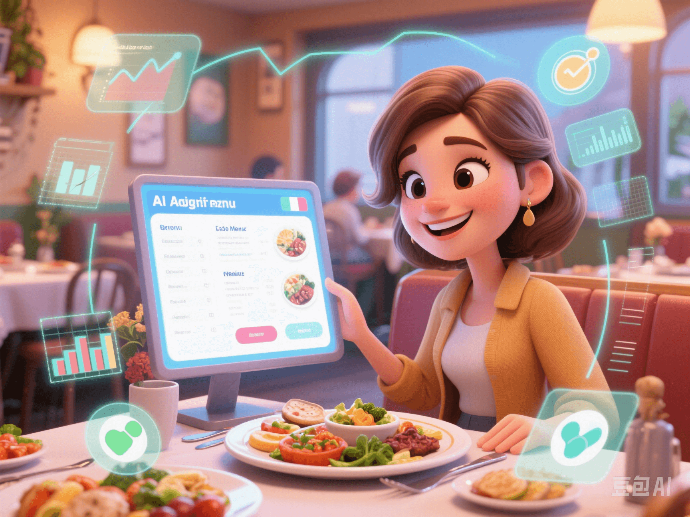

AI Customized Diet: Eat Precisely and Safely? Decoding DayTwo's "Gut Menu Revolution"
PeaceLove.Top Insights :2025-04-12
👋 Introduction
Hi, I'm your "Smart Recipe Researcher" for a healthy life. Today, I'll take you into a term that may be unfamiliar to you but has been making waves in the nutrition field: AI - personalized diet plans. One of the protagonists is DayTwo, a star project from Israel.
🌱 What is "AI - Personalized Diet"?
Put simply, it's no longer the general advice like "everyone should have less sugar and more fiber". Instead, it customizes your exclusive menu according to your own biological data (such as gut microbiota, blood sugar response, and lifestyle habits). Everyone may have completely different blood sugar responses when eating a bowl of rice. This is where AI works its magic.
🇮🇱 How Does DayTwo Do It?
DayTwo is an Israeli biotech company. It has collaborated with well - known hospitals to collect data from tens of thousands of users, including:
- The DNA sequence of gut microbes
- Post - meal blood sugar response curves
- Food intake records
- Sleep and exercise behaviors
After inputting these data into the AI model, the system can predict your blood sugar fluctuations after eating any kind of food. The ultimate goal is to generate a personalized diet plan that is good for:
- Stabilizing blood sugar
- Reducing inflammation
- Promoting metabolism
📦 User Experience
- Send a stool sample (yes, you heard it right).
- The machine analyzes the composition of your gut microbiota.
- Provide a "post - meal blood sugar prediction model".
- Output a list of suggestions on what to eat and what to avoid every day.
- The app recommends a "smart recipe" daily (and marks the "blood sugar score" for each meal).
🔍 Why Is This AI Model So Popular?
Traditional nutritional advice is "too average". For example, person A's blood sugar may skyrocket after eating bread, while person B may be fine. Research has found that the gut microbiota structure is one of the key influencing factors. DayTwo's research even shows that "even for low - GI foods, they may still cause a sharp rise in blood sugar for some people".
🌍 Who Else Is Doing It Globally?
- ZOE Health from the US (collaborating with Nobel laureates, focusing on the UK and US markets)
- Xcode Life from India (combining local Indian eating habits)
- In China, companies like Berry Genomics and Guibu Technology are also exploring this model.
📈 Expanding Application Scenarios
| Scenario | Application Direction | Who Is Most Suitable? |
|---|---|---|
| 🍽️ Diet Management | Stable blood sugar and mood | People in the fat - loss period and those in the pre - diabetes stage |
| 💼 Corporate Welfare | AI - customized meal boxes | Health - management - oriented enterprises |
| 🧬 Cross - border Application | Dual analysis of genes and microbiota | People at high risk of chronic diseases |
| 🧠 Mood Management | Blood sugar fluctuations and anxiety/fatigue | Emotionally sensitive people and mental workers |
⚠️ Rational View
Although it sounds high - tech, this technology is still in rapid development and has some challenges:
- The cost is relatively high (a complete test and service often costs over a thousand yuan).
- The gut microbiota itself is highly volatile and changes rapidly in the short term.
- There are large regional differences in diet advice (the "high - score meals" recommended by AI may not suit local tastes).
- There is a risk of psychological dependence: Some people may fall into the trap of "feeling anxious when eating the wrong food".
✅ Summary
The core of AI - personalized diet is not to tell you "what to eat to be the thinnest", but to help you find the food that best suits your body's rhythm. In the future, good health is not about "eating less", but about "eating right".